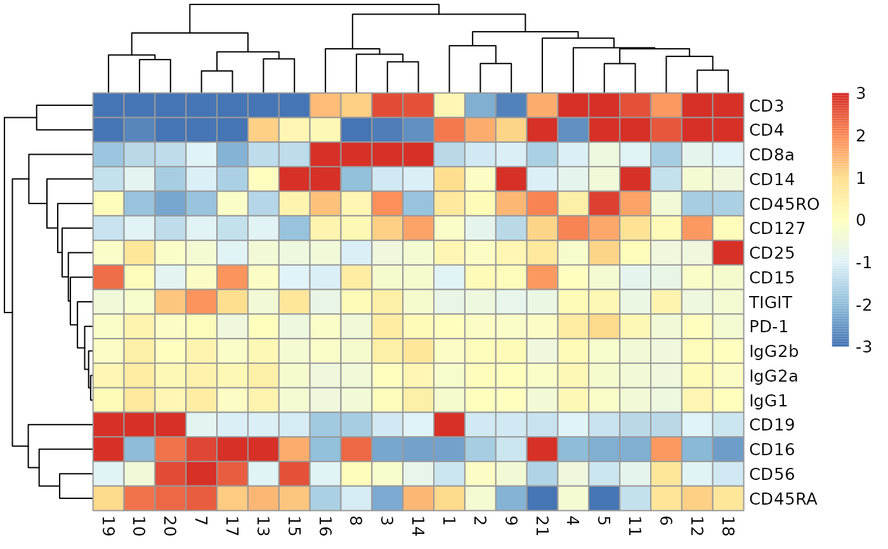
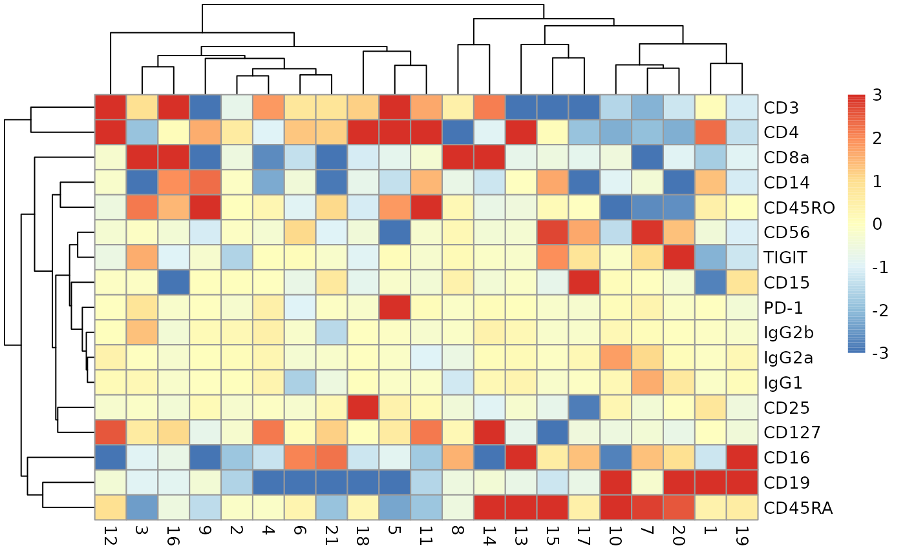

R/adt_profiles.R
adt_profiles.Rdproduce a heatmap from a specialized CITE-seq SingleCellExperiment
adt_profiles(x, lb = -3, ub = 3, do_z = FALSE)SingleCellExperiment instance that has an `se.averaged` component in its metadata
numeric(1) lower bound on 'breaks' sequence for ComplexHeatmap::pheatmap, defaults to -3
numeric(1) upper bound on 'breaks' sequence for ComplexHeatmap::pheatmap, defaults to 3
logical(1) if TRUE, divide the residuals by their standard deviation across clusters, defaults to false
ComplexHeatmap::pheatmap instance
See the OSCA book ch12.5.2 for the application.
ch12sce = get_ch12sce()
#> Loading required package: SingleCellExperiment
#> Loading required package: SummarizedExperiment
#> Loading required package: MatrixGenerics
#> Loading required package: matrixStats
#>
#> Attaching package: ‘matrixStats’
#> The following object is masked from ‘package:dplyr’:
#>
#> count
#>
#> Attaching package: ‘MatrixGenerics’
#> The following objects are masked from ‘package:matrixStats’:
#>
#> colAlls, colAnyNAs, colAnys, colAvgsPerRowSet, colCollapse,
#> colCounts, colCummaxs, colCummins, colCumprods, colCumsums,
#> colDiffs, colIQRDiffs, colIQRs, colLogSumExps, colMadDiffs,
#> colMads, colMaxs, colMeans2, colMedians, colMins, colOrderStats,
#> colProds, colQuantiles, colRanges, colRanks, colSdDiffs, colSds,
#> colSums2, colTabulates, colVarDiffs, colVars, colWeightedMads,
#> colWeightedMeans, colWeightedMedians, colWeightedSds,
#> colWeightedVars, rowAlls, rowAnyNAs, rowAnys, rowAvgsPerColSet,
#> rowCollapse, rowCounts, rowCummaxs, rowCummins, rowCumprods,
#> rowCumsums, rowDiffs, rowIQRDiffs, rowIQRs, rowLogSumExps,
#> rowMadDiffs, rowMads, rowMaxs, rowMeans2, rowMedians, rowMins,
#> rowOrderStats, rowProds, rowQuantiles, rowRanges, rowRanks,
#> rowSdDiffs, rowSds, rowSums2, rowTabulates, rowVarDiffs, rowVars,
#> rowWeightedMads, rowWeightedMeans, rowWeightedMedians,
#> rowWeightedSds, rowWeightedVars
#> Loading required package: GenomicRanges
#> Loading required package: stats4
#> Loading required package: BiocGenerics
#>
#> Attaching package: ‘BiocGenerics’
#> The following objects are masked from ‘package:dplyr’:
#>
#> combine, intersect, setdiff, union
#> The following objects are masked from ‘package:stats’:
#>
#> IQR, mad, sd, var, xtabs
#> The following objects are masked from ‘package:base’:
#>
#> Filter, Find, Map, Position, Reduce, anyDuplicated, aperm, append,
#> as.data.frame, basename, cbind, colnames, dirname, do.call,
#> duplicated, eval, evalq, get, grep, grepl, intersect, is.unsorted,
#> lapply, mapply, match, mget, order, paste, pmax, pmax.int, pmin,
#> pmin.int, rank, rbind, rownames, sapply, setdiff, sort, table,
#> tapply, union, unique, unsplit, which.max, which.min
#> Loading required package: S4Vectors
#>
#> Attaching package: ‘S4Vectors’
#> The following objects are masked from ‘package:dplyr’:
#>
#> first, rename
#> The following objects are masked from ‘package:base’:
#>
#> I, expand.grid, unname
#> Loading required package: IRanges
#>
#> Attaching package: ‘IRanges’
#> The following objects are masked from ‘package:dplyr’:
#>
#> collapse, desc, slice
#> Loading required package: GenomeInfoDb
#> Loading required package: Biobase
#> Welcome to Bioconductor
#>
#> Vignettes contain introductory material; view with
#> 'browseVignettes()'. To cite Bioconductor, see
#> 'citation("Biobase")', and for packages 'citation("pkgname")'.
#>
#> Attaching package: ‘Biobase’
#> The following object is masked from ‘package:MatrixGenerics’:
#>
#> rowMedians
#> The following objects are masked from ‘package:matrixStats’:
#>
#> anyMissing, rowMedians
adt_profiles(ch12sce)

adt_profiles(ch12sce, do_z = TRUE)
